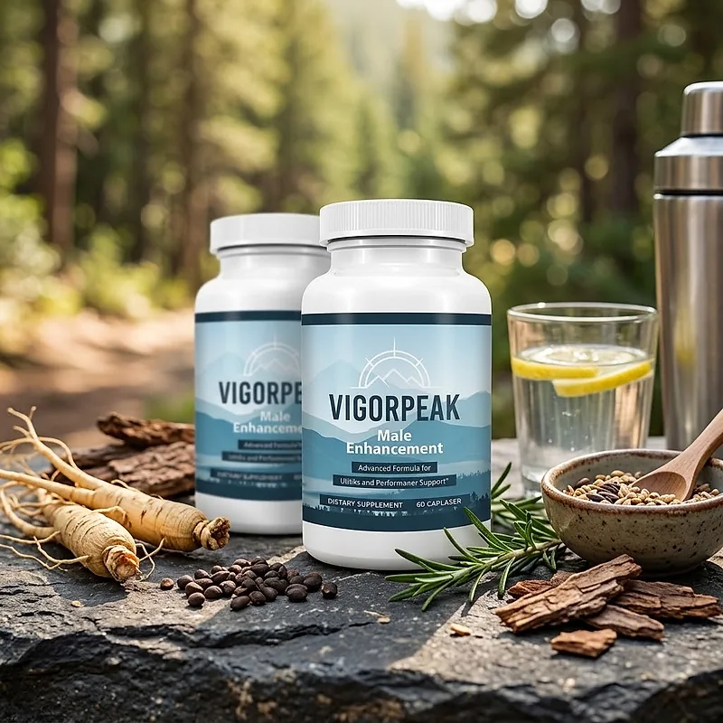
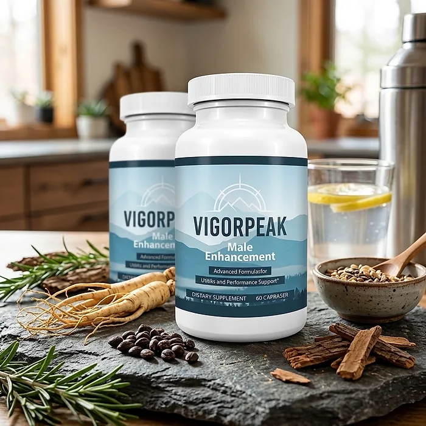
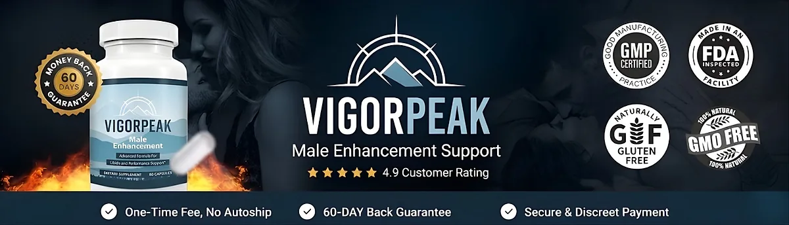

What Is VigorPeak And How Does It Work?
VigorPeak is a dietary supplement in capsule form designed to support libido, stamina, and healthy blood flow for men who want to address the lower drive, fatigue, and loss of energy that can build up with age, long weeks, and short nights through a natural, dependable approach — without complicated protocols or temporary quick fixes.
It utilizes a simple daily serving of two capsules that combines Tongkat Ali, Horny Goat Weed, Saw Palmetto, Nettle Leaf, Wild Yam, Sarsaparilla, and Boron to support male vitality, everyday hormonal balance, and circulation, helping the body maintain its natural balance throughout the day.
The ingredients in VigorPeak are traditional botanicals and a chelated mineral that, according to the official website, add up to seven actives at 118 mg per serving, with every amount printed on the label and no proprietary blend, particularly for men who prefer one simple routine over multiple products or complicated plans.
Rather than acting as a short-lived artificial fix, VigorPeak focuses on supporting circulation and hormonal balance, which the official website describes as the real reasons behind energy and drive arriving late, working gradually alongside daily routines.
With consistent daily use, a formula of this kind is intended to help with more energy, steadier drive, and greater confidence, especially when combined with regular exercise, a balanced diet, good sleep, and less stress.
From a practical standpoint, VigorPeak is a daily male vitality capsule designed to support wellness from within — helping you feel energized, stay active, and remain in control of your health.
Sold through a single official page with a secure BuyGoods checkout, VigorPeak is designed for regular daily use, with a fully disclosed formula, focusing on transparency, safety, and quality for men seeking a natural, non-prescription route to vitality.
VigorPeak Ingredients
Every serving of two capsules of VigorPeak contains seven actives totaling 118 mg, with every amount listed exactly as printed on the bottle label, chosen to support libido, stamina, and healthy blood flow as part of a consistent daily routine:
Tongkat Ali (Eurycoma longifolia) 100:1 Extract (10 mg): A concentrated root extract, equivalent to about 1,000 mg of dried root, traditionally used to support male vitality.
Horny Goat Weed (Epimedium sagittatum) 10:1 Extract (8 mg): Equivalent to about 80 mg of dried herb, long used in traditional Chinese practice to support libido and stamina.
Saw Palmetto Berry Extract (20 mg): A berry extract associated with prostate comfort and everyday hormonal balance in men.
Nettle Leaf Extract (20 mg): Traditionally paired with saw palmetto for everyday male hormonal support.
Wild Yam Root Extract (20 mg): A classic botanical in men's formulas, included for balance across the blend.
Sarsaparilla Root Extract (20 mg): A root used for generations as a tonic for energy and vitality.
Boron Amino Acid Chelate 5% (20 mg): A chelated mineral included for its role in normal hormone metabolism.
Together, these ingredients are designed to support vitality, drive, and circulation from within. A point for careful readers: the total of 118 mg per serving is small compared with many male vitality formulas, and the official website explains it by the concentrated 100:1 and 10:1 extracts of the two main botanicals.
VigorPeak is designed for daily use, offering a natural, non-prescription approach to supporting male vitality, without stimulants or complicated routines.
VigorPeak Side Effects
VigorPeak is generally considered well tolerated and is designed for adult men of different ages and lifestyles who are looking for a safe, natural, and balanced approach to male vitality, especially those who prefer an easy two-capsule daily routine to support energy, drive, and confidence without resorting to risky solutions with severe side effects.
The official website highlights that every dose is printed on the label, with no proprietary blend, so each man can check the formula with his doctor before starting, reinforcing transparency, safety, and reliability.
With no widespread reports of serious side effects, VigorPeak is generally considered a well-tolerated option. A few points deserve attention: horny goat weed may affect blood pressure and interact with blood thinners or medication for men's health; saw palmetto and nettle can interact with hormone-related medications; and some people may notice mild stomach discomfort. It is not intended to diagnose, treat, cure, or prevent any disease, and individual results may vary.
The official website recommends talking to your doctor before starting any supplement, particularly if you take prescription medication or have an existing condition, such as heart or blood pressure problems, ensuring it fits safely within your personal wellness plan. It is intended for adult men only.
VigorPeak Dosage
The recommended VigorPeak dosage is two capsules once a day with a glass of water, according to the official FAQ, and it is designed to fit easily into a daily routine, making consistency simple and convenient. Formulated as an easy daily capsule, it requires no powders to mix, no drinks to prepare, and nothing to measure.
Taking both capsules at the same time each day, for example with breakfast, makes the routine easy to remember and allows its ingredients to work consistently. The official FAQ describes it as a daily supplement, not a switch.
For best results, consistency is key. Each bottle contains 60 capsules, or 30 servings, exactly one month, and the official FAQ suggests giving it daily use for a few weeks before judging, which is why the guarantee runs a full 60 days.
There is no need for complex schedules or multi-step routines. One simple daily serving is designed to build support gradually alongside regular exercise, a balanced diet, good sleep, and moderate alcohol.
As with any dietary supplement, it's important not to exceed the recommended dose and to check the label on your bottle. VigorPeak works best when used regularly, combined with proper hydration, balanced nutrition, and healthy daily habits.
VigorPeak – Refund Policy
You can order VigorPeak with confidence, knowing that every package is covered by the same 60-day money-back guarantee. This allows you to try the formula and decide if it delivers the support you expect.
According to the official order page, you can take VigorPeak for up to 60 days and, if you are not impressed, write to support inside that window and send the bottles back, even the empty ones, for a full refund of what you paid, with no restocking fee. The returns page adds that a return authorization must be requested within 60 days of purchase and that the product must be sent back within 14 days, with the customer paying the shipping.
How the refund process works: Email support to request the return authorization, ship the bottles to 11870 62nd St. N, Largo, FL 33773, and send the tracking number by email. Once the return is received and inspected, you receive a confirmation email, and the refund is credited to your original payment method.
Customer Support Contact Information: contact@bevigorpeak.online, as listed on the official website. Order questions can also be sent to BuyGoods, the retailer.
Refund Processing Time: According to the returns page, the refund is credited within a few days after the return is approved, and it may take longer to appear depending on your bank.
This refund policy is designed to give customers a clear and transparent experience when trying VigorPeak.
VigorPeak – Where To Buy
VigorPeak is sold through its official website, so if you decide to try it, it's important to be careful about where you purchase it. The official website is the only sales channel the manufacturer lists, and it does not point to marketplaces such as Amazon, eBay, or Walmart.
Listings on third-party platforms may look similar but cannot be verified as authentic, raising concerns about safety, quality, and ingredient freshness. Products purchased outside the official source may not be covered by the 60-day guarantee.
For this reason, it makes sense to purchase VigorPeak only through the official website. Buying directly from the official source ensures you receive the authentic original product, with access to customer support and the full guarantee. According to the official website, every package is a one-time purchase, with no rebill or membership, and orders are processed by BuyGoods.
To avoid counterfeit batches and ensure maximum quality, always verify that you are ordering from the official VigorPeak website before completing your purchase.
To ensure you’re getting the authentic product, most users choose to visit the official website.
Is VigorPeak A Scam?
Based on what the official website discloses, VigorPeak does not appear to be a scam. It is a real capsule supplement, sold through an established retailer (BuyGoods), and formulated to support libido, stamina, and healthy blood flow as part of a consistent routine.
The ingredients used in VigorPeak — Tongkat Ali, Horny Goat Weed, Saw Palmetto, Nettle Leaf, Wild Yam, Sarsaparilla, and Boron — are well known in men's wellness, and the official website lists every amount exactly as printed on the label, including the extract ratios, for transparency.
In addition to its formula, VigorPeak offers a one-time purchase with no subscription or rebill, a support email, and a published return address in Largo, Florida, with a focus on clarity and simple returns.
The official website publishes no written customer testimonials, so this review does not quote any. A fair point of criticism is that the website does not say where the product is manufactured, and that the returns page uses a generic template that says sale items cannot be refunded, which does not match the guarantee on the order page. Results vary from person to person, and no supplement replaces a medical evaluation for persistent symptoms.
VigorPeak is backed by a 60-day money-back guarantee, and the return steps and the return address are published on the official website, which gives customers a clear path if the product does not meet their expectations.
If you're looking for a simple daily capsule to support energy, drive, and confidence without complicated routines, VigorPeak is worth considering — especially when purchased directly from the official website.
For those who want to verify product details or check current availability, the official VigorPeak website remains the safest option.

Check Availability On Official Website
